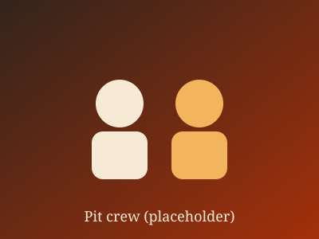

Wood
Seasoned post oak only. We never use gas or electric assist.
Holiday party and catering dates are filling up. Send a demo inquiry for a December date.
The people, the pit and the philosophy behind the line.
Cinder Ridge started as a trailer, a borrowed smoker and a plan to cook one thing well. This story is invented for the research dataset.
Today a crew of fourteen lights the fire before dawn, trims every brisket by hand, and tends the pit until lunch service.

Seasoned post oak only. We never use gas or electric assist.
Brisket takes about fourteen hours. We do not rush it for the line.
Salt, pepper, and a few things we keep to ourselves.